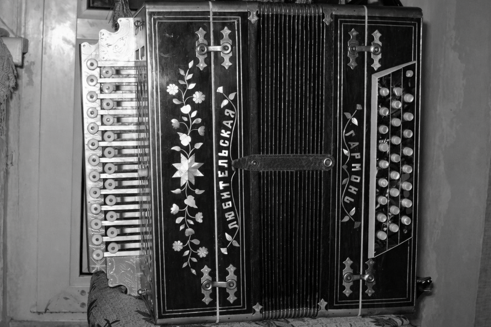
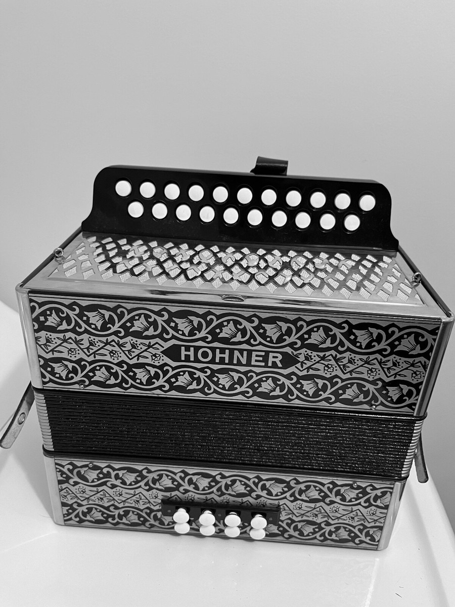
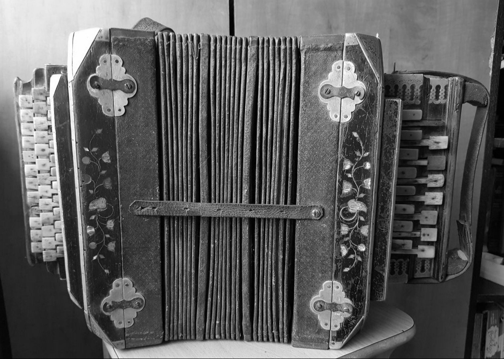
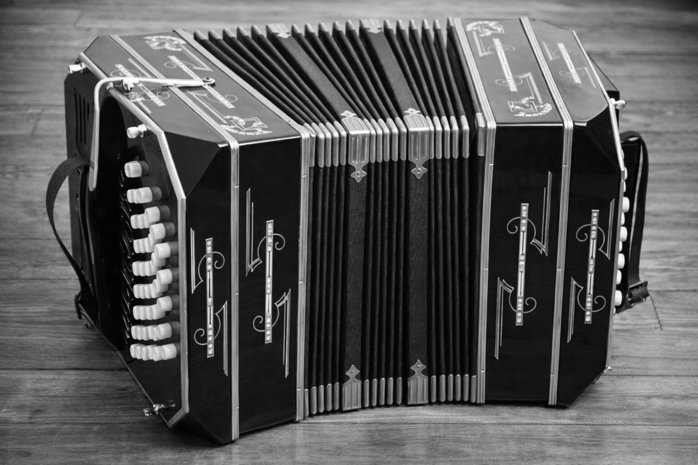

Armonika – dumplinis muzikos instrumentas, priklausantis liežuvėlinių aerofonų grupei. Garsas išgaunamas virpant metaliniams liežuvėliams, pro kuriuos pučiamas oras dumplėmis. Lietuvoje paplito XIX a. viduryje ir greitai tapo nepakeičiama kaimo vakaronių, vestuvių ir kitų švenčių dalimi.

XX a. vid. Rusijoje sukurta chromkė (rus. хромка) greitai išstūmė kitas rusiškų armonikų rūšis ir tapo populiariausia tiek Rusijoje, tiek Lietuvoje. Jos esminis bruožas – vienodas garsas tiek tempiant, tiek spaudžiant dumples. Tai radikaliai skiriasi nuo senesnių armonikų, kur garso aukštis priklausė nuo dumplių judėjimo krypties.
Pavadinimas „chromkė“ įsitvirtino dėl išplėstos diapazono – nors ji nėra visiškai chromatinė, kelios pridėtos chromatinės natos suteikia grojimui „chromatinį“ pojūtį. Konstrukcijoje kiekvienas mygtukas atidaro du vienodai suderintus liežuvėlius – vienas skamba tempiant, kitas spaudžiant. Melodijai skirta dviejų eilių klaviatūra, bosams ir akordams – 2–3 eilės kairėje rankoje.

1829 m. Vienoje C. Demianas patobulino Buschmanno instrumentą – pridėjo gatavų mažorinių akordų klaviatūrą. Taip gimė Vienos armonika. Jos garsas priklauso nuo dumplių krypties: tempiant ir spaudžiant skamba skirtingi garsai. Būna 2–5 eilių, dažnai turi gatavus mažoro ir minoro akordus. Dviejų eilių variantas – tai dviejų vienaeilių armonikų, suderintų gretimomis tonacijomis, junginys.

XX a. pr. Rusijos caro nurodymu Sankt Peterburge įkurtas muzikos instrumentų fabrikas gamino reprezentacines armonikas. Tai Vienos armonikos tipo modifikacija, būna 2–4 eilių. Lietuvą pasiekė ~1920 m. Po II pasaulinio karo fabrikui sudegus, jame dirbę lietuvių meistrai grįžo namo ir pradėjo savarankišką gamybą. Taip susiformavo lietuviška armonikos gamybos mokykla, o instrumentas liaudyje žinomas kaip „peterburska“, „piterska“, „pataburska“.

Mažojoje Lietuvoje (Klaipėdos krašte) paplitusi bandonija – vokiškos kilmės keturkampė "armonika", naudojama ir tango muzikoje Lotynų Amerikoje. Lietuvoje grota solo arba kapelose, būdinga regioninė tradicija. Jos forma ir klaviatūra skiriasi nuo kitų tipų.
1853 m. Antanas Baranauskas savo dienoraštyje pirmąkart mini armoniką Lietuvoje. Instrumentai daugiausia įvežti iš Vokietijos ir Austrijos, mažiau – iš Rusijos ir Italijos.
Paplitimo raida: XIX a. pab. – 2 eilių Vienos armonika; ~1920–1950 – Peterburgo armonika (šiaurės rytų Aukštaitija); XX a. vid. – rusiškoji chromkė (ypač sovietmečiu); Mažojoje Lietuvoje – bandonija.
2019 m. Šiaurės rytų aukštaičių muzikavimas Peterburgo armonika įtrauktas į Nematerialaus kultūros paveldo vertybių sąvadą.
FolkBox – vizualus įrankis, skirtas padėti suprasti rusiškos armonikos išdėstymą. Galite pasirinkti tonaciją ir pamatyti mygtukų išdėstymą bei melodijos pusėje sugroti galimus akordus.
2022 metais visai netyčia mano rankose atsidūrė armonika. Pradėjau iš klausos mokytis groti – ir visai greitai pramokau. Iki šiol groju tik iš klausos, be natų ar muzikos teorijos.
Šią svetainę sukūriau norėdamas padėti sau ir kitiems suprasti armonikos logiką. Pats mokydamasis pastebėjau, kad dažniausios schemos būna fiksuotos vienai tonacijai – galvoje "persidaryti" nemoku, o "skaičiuoti", kaip pasikeistų natos rankomis, didelis vargas. Taip gimė FolkBox – įrankis, kuris leidžia pasirinkti tonacijas ir matyti, kaip keičiasi natos, bet išlieka tie patys intervalai.
Dabar studijuoju Dirbtinio intelekto sistemas Vilniaus Gedimino technikos universitete ir bandau sujungti technologijas su savo pomėgiu liaudies muzikai.
FolkBox – tai mano bandymas suderinti šias dvi sritis: algoritmus ir armonikos garsą. Tikiuosi, pravers!
Šaltiniai: Visuotinė lietuvių enciklopedija (vle.lt), Vikipedija (lt.wikipedia.org). Rekomenduojama literatūra: A. Baika „Armonikų tipo instrumentai Lietuvoje“ (1984), „Kaimo armonikos“ (1994).